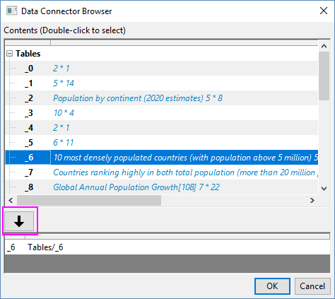

Daten importieren
Import-Data
Zusammenfassung
Origin bietet mehrere Möglichkeiten zum Importieren von Daten. Die leistungsstärkste und flexibelste Methode ist dabei der Datenkonnektor. Dieses Tutorial zeigt Ihnen, wie Sie Dateien von einer lokalen Datei oder aus einer Web-Tabelle mit dem Datenkonnektor importieren.
Was Sie lernen werden
- CSV- und Excel-Datei mit Datenkonnektor importieren
- Daten auf Webseite importieren
- Daten speichern und erneut laden
Schritte
| Hinweis: Bitte laden Sie die Beispieldaten herunter, die dieses Tutorial erfordert. Dies tun Sie hier. |
Konnektor zu großen CSV-Datensätzen
- Öffnen Sie ein neues Projekt. Wählen Sie bei aktiver leerer Arbeitsmappe im Menü Daten: Mit Datei verbinden: Test/CSV.
- Im Dialog für die Dateiauswahl, der aufgerufen wird, navigieren Sie zu dem Ordner, in dem Sie die heruntergeladenen beispieldaten gespeichert haben, und wählen die Datei Multichannels.csv. Klicken Sie auf die Schaltfläche Öffnen.
- Im Dialog CSV-Importoptionen werden die Dateiheaderzeilen wie Spaltenamen, Einheiten etc. automatisch erkannt. Klicken Sie auf OK, um die Datei entsprechend zu importieren.
- Der CSV-Konnektor nutzt den Multikernprozessor Ihres Computers und braucht nur ein paar Sekunden, um diesen Datensatz mit 7 Spalten und 2 Millionen Zeilen zu importieren. Das ISO-Datums-/Zeitformat wird automatisch erkannt und korrekt importiert.
- Wählen Sie im Menü Datei: Projekt speichern, um das Projekt als multi_channel.opju zu speichern. Wenn der importierte Datensatz wie in diesem Beispiel sehr groß ist, wird er beim Speichern ausgeschlossen, um die Projektdatei klein zu halten. Wenn Sie es vorziehen, dass die Daten nicht aus dem gespeicherten Projekt ausgeschlossen werden, klicken Sie auf das Konnektorsymbol oben links und deaktivieren Sie Importierte Daten beim Speichern ausschließen.
Mit Excel-Datei verbinden, die mehrere Blätter enthält
- Fahren Sie mit dem Projekt fort, das Sie während des vorherigen Abschnitts gespeichert haben. Öffnen Sie eine neue Arbeitsmappe, indem Sie auf die Schaltfläche Neue Arbeitsmappe
 klicken. Wählen Sie im Menü Daten: Mit Datei verbinden: Excel.
klicken. Wählen Sie im Menü Daten: Mit Datei verbinden: Excel.
- Navigieren Sie zu dem Ordner, in dem die heruntergeladenen Beispieldaten gespeichert sind. Klicken Sie zum Auswählen der Datei S1_S4.xlsx doppelt.
- Legen Sie im Dialog Excel-Importoptionen die Headerzeilen, wie unten zu sehen, fest. Klicken Sie auf OK, um die Datei zu importieren.
- Wenn eine Excel-Datei mehrere Blätter enthält wie dieses Beispiele, aktiviert das Importieren eines dieser Blätter das Bedienfeld des Datennavigators links von der Arbeitsmappe. Das importierte Blatt ist fett geschrieben und die anderen abgeblendeten Namen kennzeichnen, dass die Blätter noch nicht importiert sind. Sie können ein oder mehrere Blätter auswählen, mit der rechten Maustaste klicken und Blatt/Blätter hinzufügen und verbinden auswählen, um sie zu verbinden.
- Markieren Sie das Arbeitsblatt s1. Wählen Sie im Menü Zeichnen: Einfache 2D: Gestapelte Linien mit Y-Versatz, um ein Diagramm zu erstellen.
- Klicken Sie auf die Schaltfläche Projekt speichern
 , um das Projekt zu speichern.
, um das Projekt zu speichern.
Mit Web-Tabelle verbinden
Abgesehen vom Datenimport aus einer lokalen Datei können Sie eine Verbindung zu einer Datei online oder Tabellen auf einer Webseite herstellen. In diesem Abschnitt stellen wir mit Hilfe des Web-Konnektors eine Verbindung zu einer Tabelle auf Wikipedia her.
- Fahren Sie mit dem Projekt fort, das Sie während des vorherigen Abschnitts gespeichert haben. Öffnen Sie eine neue Arbeitsmappe, indem Sie auf die Schaltfläche klicken. Wählen Sie im Menü Daten: Mit Web verbinden.
- Kopieren Sie die folgende URL und fügen Sie sie im aufgerufenen Dialog ein.
https://en.wikipedia.org/wiki/World_population
- Ein Browser mit den verfügbaren Tabellen der Dimensionsinfos wird angezeigt, so dass Sie sich in der gewünschten zu importierenden Tabelle einfach zurechtfinden und sie auswählen können. In diesem Beispiel wählen Sie die Tabelle 10 Most Densely Populated Countries aus der oberen Liste und klicken auf den nach unten weisenden Pfeil, um sie zum unteren Bedienfeld hinzuzufügen.
- 
Klicken Sie auf OK, um die Datei zu importieren.
- Klicken Sie auf die Schaltfläche , um das Projekt zu speichern.
- Klicken Sie auf die Schaltfläche Neues Projekt
 , um dieses Projekt zu schließen und ein leeres Projekt zu öffnen.
, um dieses Projekt zu schließen und ein leeres Projekt zu öffnen.
- Wählen Sie im Menü Datei: Zuletzt verwendete Projekte und wählen multi_channel.opju in der Unterliste, um das gerade gespeicherte Projekt erneut zu öffnen. Beim erneuten Öffnen einer Origin-Projektdatei mit verbundenen Daten wird das Konnektorsymbol in der Arbeitsmappe gelb angezeigt , wenn die Daten aus dem gespeicherten Projekt wie bei den Excel-Daten, die wir im zweiten Abschnitt importiert haben, ausgeschlossen wurden. Es gibt auch ein Downloadsymbol im Diagrammfenster. Klicken Sie einfach darauf, um die verbundenen Daten dieses Diagramms zu importieren, oder klicken Sie auf Konnektorsymbol in der Arbeitsmappe und wählen Sie Alle Mappen importieren, um die Daten für alle Mappe erneut zu laden.
 |
Bitte beachten Sie, dass die importierten Daten per Standard geschützt sind und Sie sie nicht ändern können. Eventuell können Sie den Hinweis unten sehen.

- Klicken Sie auf das grüne Symbol in der oberen linken Ecke des Arbeitsblatts und wählen Sie Verbindung zum Blatt aufheben oder Datenkonnektor entfernen im Kontextmenü.

Weitere Einzelheiten finden Sie auf der Seite: Wie lasse ich das Ändern von Daten zu, wenn ich einen Datenkonnektor verwende?
|